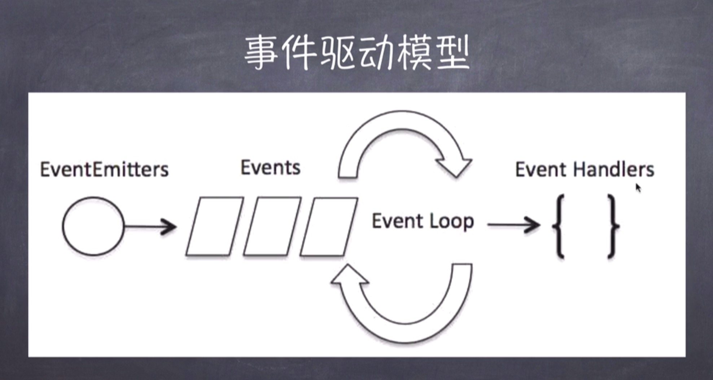
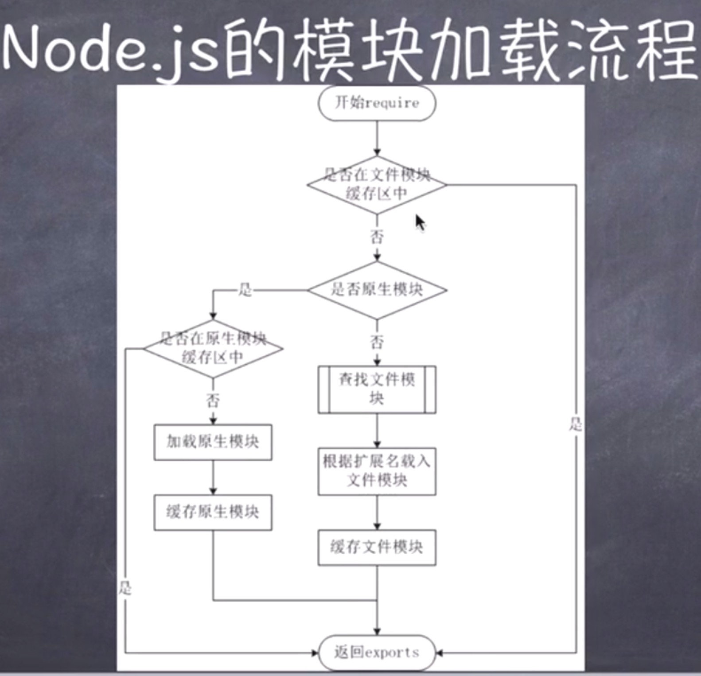

hello-node
nodeJS初始
什么是nodeJS
- 他的本质是
javascript解析器 - 他是
javascript的运行环境 - 他是运行在服务端的
- 他是由
google-V8引擎所创建的 - 他不会一个
WEB服务器
为什么要使用nodeJS
- 处理高效的I/O操作
- 提供高性能的web服务器
- 事件机制非常完善
- 天然处理DOM
- 社区比较完善，十分火热
nodeJS的优势
- 处理大流量数据
- 适合实时交互的应用
- 在线聊天系统
- 完美支持对象数据库
- MongoDB
- 异步处理大量并发连接
学习nodeJS的前置知识
- javascript
- ES6
- 一些服务器相关的知识
- Linux
- Http
- Apache
- 最好在Linux系统下进行开发
相关网站
nodeJS入门
nodeJS安装
- 学习阶段尽量使用最新版本
- 前往官网根据自己的设备进行对应下载
包管理系统 npm
- https://www.npmjs.com/
- http://npm.taobao.org/
- 允许用户从
npm服务器下载第三方的资源包到本地使用 - 允许用户从
npm服务器下载并安装第三方的命令行程序cli到本地执行 - 允许用户将自己编写的包或者命令行程序上传到
npm服务器供别人使用 - 本地配置
package.json文件，使用命令自动化执行脚本
启动一个最简单的Http服务
1 | const http = require('http'); |
nodeJS环境与npm命令深入
nodeJS提供的工具
- nodeJS提供了一套交互环境（REPL），可以在这个环境内做简单的数据交互。
- 进行简单的运算
- ctrl + c 终端
- ctrl + u 清空输入
- ctrl + l 清空本次历史
- table 命令提示
npm
- https://www.npmjs.com/
- npm更新npm
1 | npm install -g npm |
- npm全局安装包
1 | npm install -g <packageName> |
- npm全局卸载包
1 | npm uninstall -g <packageName> |
nodeJS回调机制
什么是回调
- 函数调用的方式
- 同步调用
- 回调
- 异步调用 -
ajax、事件、setTimeout、setInterval
阻塞与非阻塞
- 阻塞与非阻塞关注的是程序在等待调用结果（消息、返回值）时的状态
- 阻塞就是等待结果出来以后在顺序执行
- 非阻塞就是可以先去执行其他的事情，等结果出现再处理结果
1
2
3
4
5
6
7
8
9
10
11
12
13const fs = require('fs');
// 阻塞代码 - 同步
let md = fs.readFileSync('1.md');
console.log(md.toString());
// 非阻塞代码 - 异步
fs.readFile('1.md', (error, data) => {
if (error) {
return console.error(error);
}
console.log(data.toString());
});
console.log('判断是否是异步函数');
nodeJS的回调
nodeJS的事件驱动机制
事件驱动模型
- 单线程程序
- 通过
事件与回调来模拟多线程 - 所有的事件模式都是依据
观察者设计模式来实现的

事件处理代码流程
- 引入events对象，创建对象
- 绑定事件处理程序
- 触发事件
1 | // 引入事件处理对象 |
nodeJS模块化
nodeJS模块化
- 模块化的概念与意义
- 为了让nodeJS的文件可以相互调用，nodeJS提供了一个简单的模块化机制
- 模块是nodeJS应用程序的基本组成部分
- 文件与模块是一一对应的。一个nodeJS文件就是一个模块
- 文件的内容可以是
javascript代码、JSON文件、或者编译过得C/C++扩展。
- nodeJS中的模块
- nodeJS中存在4类模块（原生模块和3种文件模块）。
- nodeJS的模块加载流程
- 从文件模块缓存中加载
- 从原生模块加载
- 从文件加载
- nodeJS模块导出与导入方式
require导入模块require方法接受参数的传递：http、fs、path、等原生模块。./mod或者../mod，尽量使用相当路径。/mod，绝对路径可能以为环境的不同导致路径出现错误。mod，非原生的文件模块
module.exports导出模块- 可以导出函数名
- 可以导出对象名
- 可以导出变量名

nodeJS函数
函数的概念
- 在javascript中，一个函数可以作为另一个函数的参数
- 也可以直接把函数体做为参数（匿名函数）。
1 | var Fun = function(art) { |
nodeJS路由
- 路由：在
nodeJS中就是拿到响应的url路径，返回对应的资源。 - 实现一个最简单的
nodeJS服务器路由机制
1 | // http.js |
1 | // router.js |
1 | const server = require('./http'); |
- nodeJS处理
get请求- get请求参数都在链接上，直接进行url地址参数解析就能获取全部参数
- nodeJS处理
post请求- post请求参数都包含在请求体内，需要进行解析才能拿到数据
1 | if (path.pathname == '/post') { |
nodeJS全局对象
- 全局对象是
global，所有的全局变量（除了global本身以外）都是global对象的属性 - __filename 表示当前正在执行脚本的文件名，他将输出文件的绝对路径，且和命令行所指定的文件名不一定相同。如果在模块中，返回的值一定是模块文件的路径。
- __dirname 表示当前正在执行脚本的文件目录。
- setTimeout (同javascript)根据给定的时间，只执行一次指定函数。
- imeout (同javascript)
- setInterval (同javascript)
- clearInterval (同javascript)
- console (同javascript)控制台标准输出
- log
- info
- error
- waring
- ……
- process 表示nodeJS进程的状态
- util 提供了一下javascript过于简洁没有封装的功能函数，推荐使用
underscore与lodash进行项目开发。
感谢您的阅读，本文由 cheng 版权所有。如若转载，请注明出处：cheng（https://18600917746.github.io/2019/01/19/hello-node/）